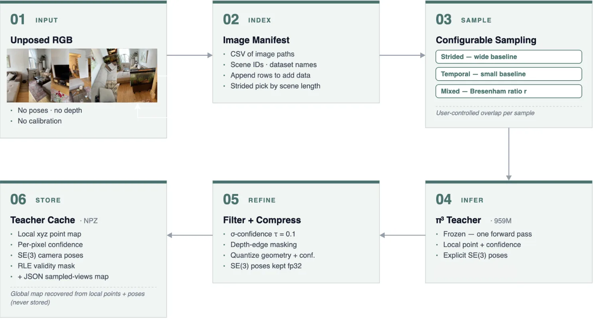
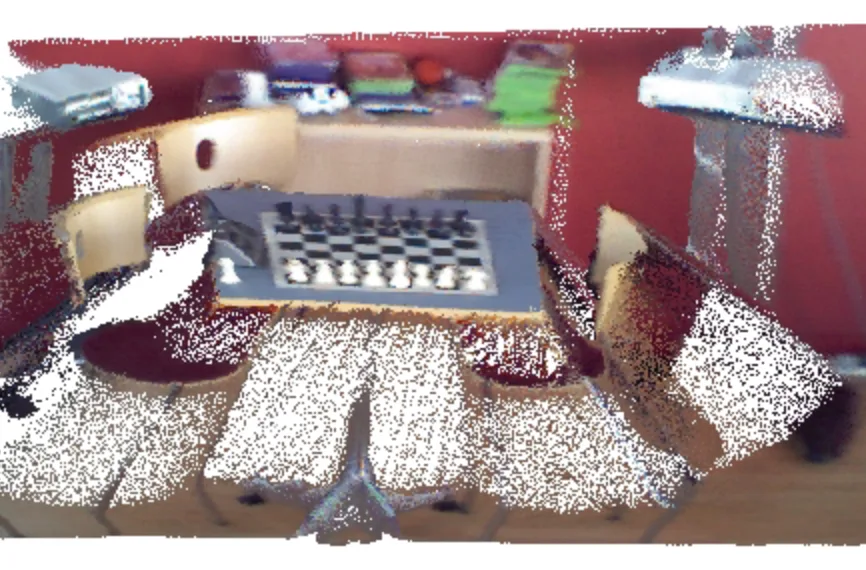
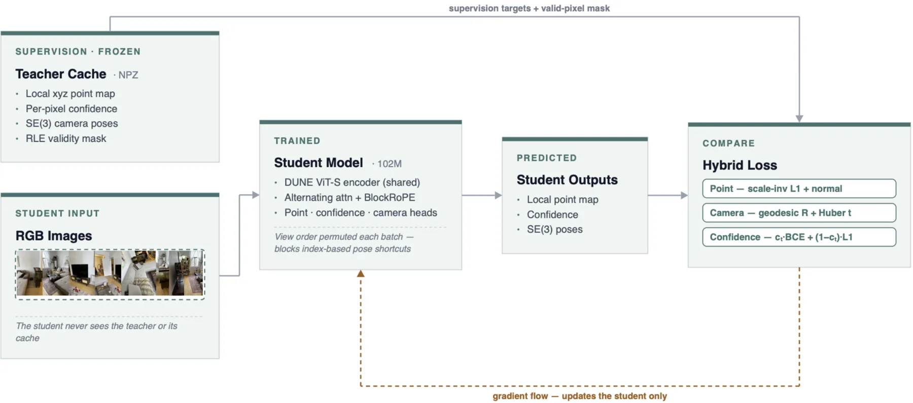
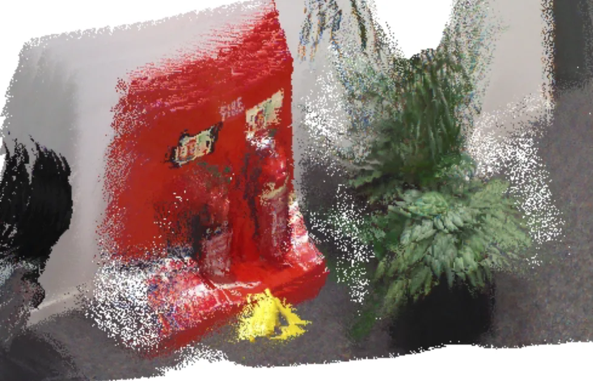
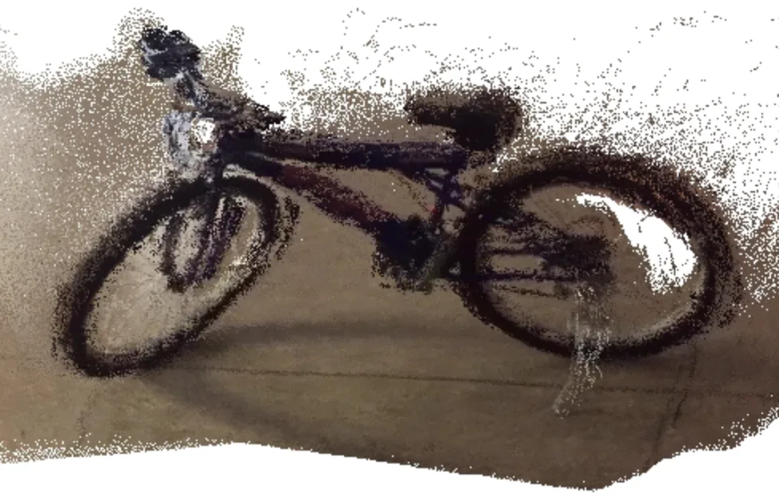

OTT3R：用 1% 算力做多视图 3D 重建与快速数据集生成
OTT3R: Multi-View 3D Reconstruction and Fast Dataset Generation at 1% Compute
把 π³（959M）蒸馏成 102M 学生（9.4× 压缩）并配套神经版 COLMAP：1.6% 算力单机可训；域特化学生在 7-Scenes 上比 COLMAP 准 4×、吞吐 980×，通用零样本在 7-Scenes/DTU completion 上超 COLMAP，但分布外多视图几何不敌教师。
params
compute
vs COLMAP
FPS
作者、单位与技术谱系 · Research context
作者与单位
研究脉络
- Distill3R方法基座关系：OTT3R 把单工作站蒸馏从单目扩展到多视图，加入直接 SE(3) 位姿监督与可配置采样，并做更省存储的缓存。[论文第 1、2 节]
- π³ / VGGT 教师上游模型关系：以 π³（959M）为教师做蒸馏，并沿用其损失设置；VGGT 是算力比较基准。[论文第 4.1、4.2 节]
- DUNE ViT-S 编码器上游骨干关系：采用 DUNE 的异构协同蒸馏编码器作骨干，并在消融中与 DINOv2-S 对比。[论文第 3.3、4.3 节]
合作网络
- Concordia University ICT Lab 官方代码仓库论文作者 → GitHub TheFourthKaramazov/OTT3R关系：官方代码[GitHub 仓库]
- OTT3R 对 DUNE 与 π³ 的技术依赖OTT3R 学生 → DUNE 编码器 / π³ 教师关系：明确技术依赖[论文第 3.3、4.1 节]
作者/单位取自论文首页；脉络是依据论文引用与自述的解读；对 DUNE/π³ 只记录明确技术依赖，不推断合作关系。
方法本质拆解 · What actually changed
是不是微调？
从公开的 π³ 与 DUNE 检查点出发训练学生网络（DUNE ViT-S 编码器 21M + 主解码器与三个任务解码器，共 102M）；训练数据是用 π³ 生成的伪标签，不用传感器真值。通用模型在 2×RTX 6000 Ada 上 200 epoch、约 8 天完成；7-Scenes 特化从零在伪标签上训 500 epoch、约 23 小时。教师全程冻结。
有没有额外约束？
输入只有无位姿 RGB，额外约束有三层：教师置信度与深度边缘过滤产生有效掩码（σ(·)>τ=0.1 且相对深度变化不进 3% 边缘），限制哪些像素参与损失；尺度不变 L1 用 per-sample 的 ROE 最优尺度 s* 把学生对齐到教师尺度；位姿损失对全部成对视角用Huber 平移（δ=0.1）+ 测地旋转（α=100），法向损失再约束表面朝向。
推理/后端到底做了什么？
推理没有新后端：一次前向由三个解码器分别输出每相机的局部点图、逐像素置信度与相机到世界 SE(3) 位姿，全局几何按 P_g = T_k·P̃_k 恢复，不显式缓存全局点图，因此存储与训练成本都下降。部署时学生可直接叠加 token merging、稀疏注意力、量化等推理加速方法。
方法本质是什么？
本质是把“多视图一致性”从单纯的几何回归变成被显式位姿监督约束的任务：既然对齐视图需要位姿，就用教师位姿直接监督，并用大基线采样制造只有学会位姿才能解决的学习信号。它没有做的是超越教师——所有消融都表明靠选型弥补不了与教师的差距，作者把差距归因于算力预算，并把域特化作为务实答案。
输入无位姿 RGB（配教师缓存的伪标签），改变的位置是学生网络与伪标签流水线，合并动作为成对 SE(3) 位姿损失 + 混合置信度损失，直接效果是 1% 算力下单机可训的多视图重建与高速伪标签生成。

动机与问题Motivation
动机与问题
前馈三维重建靠指数级扩模型与数据取胜（Fast3R 128×A100 训 6 天、π³ 959M、VGGT-Ω 128×H100），成本把多数研究组与边缘部署排除在外；同时没有传感器时生成 3D 监督仍依赖慢而脆弱的 SfM（作者测得约 0.3 FPS，低分辨率下失败率更高）。作者的问题是：在约 1% 训练算力、单机硬件下，能做出多少可用的前馈三维重建？
方法Method
方法总览
框架三块：① 伪标签流水线（用 π³ 从无位姿 RGB 生成稠密点图与 SE(3) 位姿，提供 strided/temporal/混合采样、置信度与深度边缘过滤、量化缓存、manifest 管理）；② 102M 学生（DUNE ViT-S 编码器 + 交替注意力 + 点/置信度/相机三个解码器）；③ 混合蒸馏损失（尺度不变 L1 点损失 + 法向损失 + 成对 SE(3) 位姿损失 + 混合置信度损失），并支持域特化。
关键技术细节
与最近的单机蒸馏工作 Distill3R 的关键区别有两处：直接监督 SE(3) 相对位姿（对全部视角对算 Huber 平移 + 测地旋转损失，α=100），以及提供能够产生大基线的可配置采样（作者指出没有 strided 采样学生学不会位姿）。位姿损失与点损失共享一个 per-sample 的 ROE 尺度 s*；置信度用 c^t·BCE + (1−c^t)·L1 的混合，BCE 标签来自学生自身重建误差。教师输出先量化缓存（几何与置信度量化、位姿全精度），全局几何由局部点图 × 位姿恢复，使每图缓存约为前作的 1/3。

实验Experiments
实验设置
多视图重建按 π³ 协议在 7-Scenes 与 DTU 上评测（Sim3/Umeyama 对齐 + ICP，Acc/Comp 于 518×224），COLMAP 跑完整管线（含稠密 MVS）在 640×480；相对位姿在 CO3D 的 14,460 个 20 视图样本（约 5.5M 对）上用 RRA@5/@30 与 median rot/trans 评估；深度在 ARKitScenes、Habitat、7-Scenes 上评 Abs Rel 与 δ<1.25。对照为 π³ 教师、Distill3R、COLMAP，学生行位姿是对教师一致性而非真值精度（教师对真值近饱和）。
实验数字与比较
7-Scenes 上域特化学生 Acc 6.16 cm / Comp 2.84 cm，比 COLMAP 的 24.27/57.56 cm 准约 4×，吞吐 274 FPS 对 COLMAP 0.28 FPS（980×）；通用零样本学生 10.16/34.84 cm、273 FPS。位姿（对教师）：temporal 对 median 2.8°、RRA@30 96.1%；strided 对 median 15.3°、RRA@30 65.3%；合并 4.9°/80.7%。深度：ARKitScenes 学生 97.0% δ<1.25 vs 教师 98.8%；7-Scenes 通用降至 85.7%、Abs Rel 13.1%，域特化回到 98.1%/5.7%。推理（128 视图）：OTT3R 2.2 s/5.2 GB，教师 12.82 s/12.34 GB，VGGT OOM。
消融/失败边界
去掉相机损失，7-Scenes completion 从 2.84 恶化到 49.57 cm（17×），说明没有 SE(3) 监督学生无法把视图对齐成一致场景；只用 temporal 采样 completion 恶化到 25.22 cm（9×）。纯 L1 置信度收敛成教师模仿（相关 0.88），纯 BCE 过自信（均值 0.97 vs 教师 0.70），混合保持校准（0.79）。编码器消融：DINOv2-B（280M）反而更差（9.66/20.97 cm），54M 也变差，说明该算力预算下更多容量不会被有效利用。
局限与迁移Limitations & Transfer
局限与待核验
作者明确写：学生不匹配教师的多视图几何精度，尤其分布外；位姿是对教师而非真值评估（教师近饱和故可作有效上限，但不等于真值精度）；流水线继承教师在强动态/非刚性场景的局限；未扫描过滤阈值，未单独消融置信度过滤/深度边缘/缓存量化/法向损失，也没有多随机种子。待核验：位姿“与教师一致”被用作绝对精度的间接证据，但缺少直接真值对比。
与你研究路线的关系
对“有限算力下做可复现几何模块”这一点，OTT3R 提供可迁移的三件套：用可配置大基线采样保证位姿可学、用直接 SE(3) 监督把全局一致性做出来、用域特化（<10 分钟生成缓存 + 23 小时训练）替代无上限扩尺度。它的伪标签流水线可作为我们生成大规模几何监督、替代慢 SfM 的候选后端；“通用不敌教师、专域反超”的结论也提醒我们：验证应以目标分布为准。







